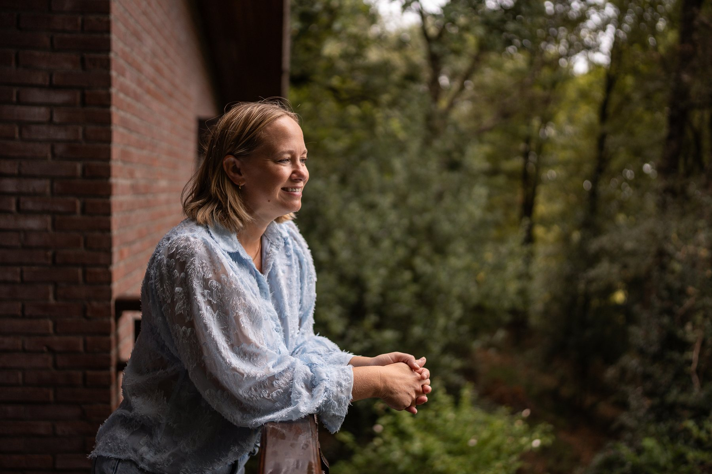
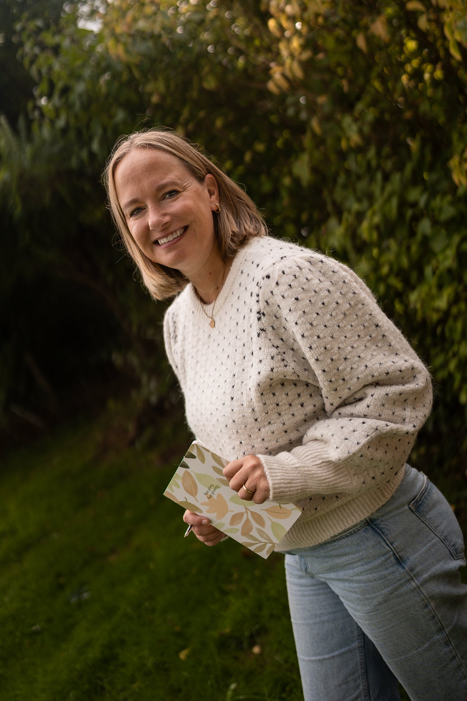
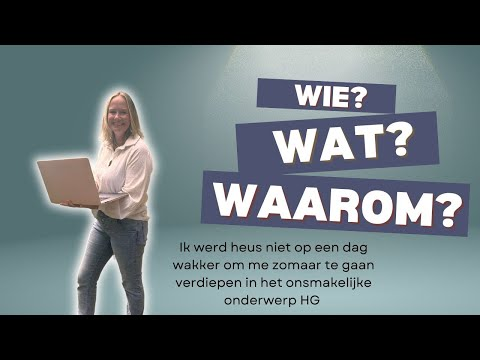

Voor zwangeren en moeders
Ben je zwanger (geweest) en had je Hyperemesis Gravidarum?
Dan kan ik jou helpen met coaching en/of EMDR therapie. Ook bij herstel, kinderwens, bevaltrauma of andere hulpvragen rondom zwangerschap en ouderschap.
Zodat jij je niet hoeft te bewijzen of uit te leggen, maar we direct kunnen kijken naar wat er nodig is.

Dan kan ik jou helpen met coaching en/of EMDR therapie. Ook bij herstel, kinderwens, bevaltrauma of andere hulpvragen rondom zwangerschap en ouderschap.
Ik geef praktische cursussen die jou hierbij zeker weten gaan helpen.
Bekijk scholingWil jij jouw ervaring inzetten om vrouwen met HG een luisterend oor te bieden en ze tools aan te reiken hoe om te gaan met deze moeilijke periode in hun leven?
Kijk eens naar de opleiding tot HG coach

Wie is Marjolein? Bekijk de videoIn het derde jaar van de opleiding verloskunde was ik zwanger van onze zoon Jesse. Inmiddels hebben we er twee meiden bij mogen krijgen: Senna en Lotte. Alle drie de zwangerschappen leed ik aan hyperemesis gravidarum, een ernstige vorm van zwangerschapsmisselijkheid en uitputting — of eigenlijk meer dan dat.
Inmiddels weet ik veel over deze aandoening en durf ik mezelf HG-expert te noemen. Niet alleen omdat ik het zelf door heb moeten maken, maar ook omdat het professioneel mijn interesse heeft gewekt. Ik volg onderzoek op de voet en bezoek congressen over dit onderwerp.
Die kennis geef ik graag door aan verloskundigen. Daarnaast help ik met hart en ziel vrouwen die deze ziekte mee hebben moeten maken. Ik weet hoe het is en kan je helpen ermee te dealen of het te verwerken.
Marjolein heeft veel kennis over het onderwerp HG. En zij weet het praktisch te maken, zodat je er ook echt wat aan hebt in de praktijk.
Marjolein heeft mij geholpen door de zwangerschap heen te komen. Door te luisteren, me het gevoel te geven dat ik niet gek geworden was en met echt goede tips en adviezen. Zij begrijpt hoe het is.
Ik vond EMDR heel spannend, maar door de duidelijkheid en de rust en de regie die Marjolein mij gaf, durfde ik het toch aan.
Mijn achtergrond als verloskundige, mijn eigen ervaring met HG en jarenlange verdieping komen samen in mijn werk met cliënten en zorgprofessionals.
Bekijk de landelijke richtlijn HGIk ben gecertificeerd coach en ben aangesloten bij: